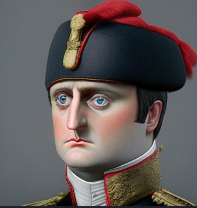

VERSATILE COMPANY
We are a leading company in the field of fleet management and logistics tracking. We do this by;
Providing 24/7 GPS tracking deices to individuals and companies to track the position of their valuables, these include;
Cars
Smartphones
Wearables, that is smartwatches
Pets
Laptops, etc
We import GPS tracking devices such as Optiimus GPS trackers
We also have fuel tank level trackers to help you better understand your gas tank
The advantage of trusting and working with us include;
You increase your profits by encouraging more fleet trips
You reduce losses by knowing the health or situation of your fuel tank
There will be no loss of your valuables anymore since you can view their location
THE COMPANY'S PROFILE
Currently ocated in Sseguku, Versatile started in a small office in the year 1989 by the founder
with very few customers, now we have more than 100 customers in Uganda only, however, we are also in;
Estonia, Russia and other countries where we mostly get the devices from.
The current company leaders are;
